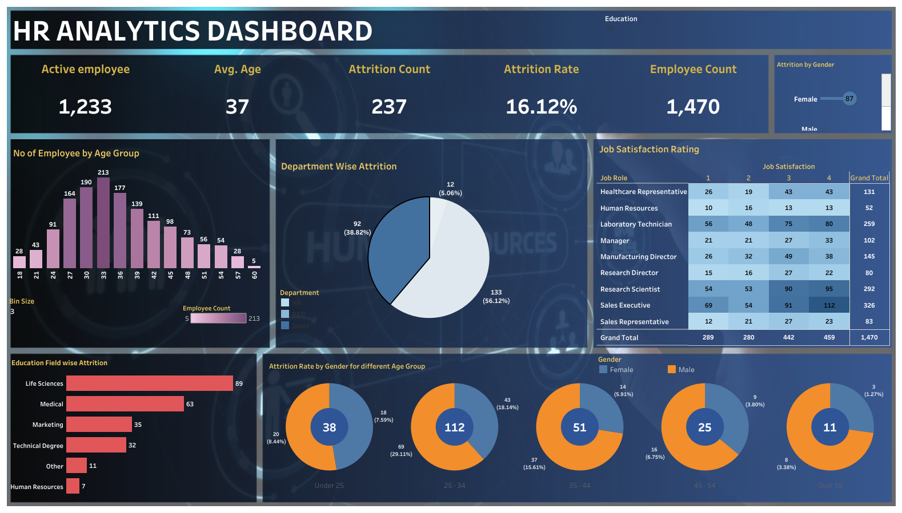

Smoking Dataset in UK
The Power BI report focuses on the smoking dataset in the UK and utilizes various charts to visually represent the data. The dataset closely resembles the UK adult population to some extent. There is a slightly higher proportion of females compared to males within the sample. The majority of participants are married (48%) or single (25.35%). Education-wise, participants either have no formal qualifications (34.65%), have completed GSCE/0 level education (18.21%), or possess higher qualifications such as degrees (15.49%). The ethnic composition of the sample predominantly consists of White individuals (92%), exceeding the proportion reported in the 2021 Census (80%). A significant majority of the sample (three-quarters) does not engage in smoking behaviors, indicating an imbalance in this aspect. The collected sample provides valuable insights into the demographics and exhibits similarities to the UK adult population. The gender distribution suggests a modest gender imbalance, with slightly more females represented. Marital status reveals that a majority are married, followed by single individuals. The educational qualifications showcase a notable portion without formal qualifications, a significant percentage with GSCE/0 level education, and a considerable proportion with higher qualifications. The ethnic composition largely aligns with the White population. Notably, the distribution of smoking behaviors within the sample indicates a substantial majority of non-smokers. These insights underscore the importance of considering the sample composition when interpreting findings related to smoking behaviors.

FAKE NEWS DETECTION USING PASSIVE CLASSIFIER
Using Jupyer NoteBook, I built a TFIDFVECTORIZER on my dataset. Then initialize a passive aggressive classifier and fit the model, I also compare all other classifiers to see the best accuracy. In the end the accuracy score and confusion matrix tell us how well our model fares

HR ANALYTICS DASHBOARD
I employed Tableau software to examine the HR dataset, generating multiple calculated columns utilizing various formulae. Additionally, I implemented a formula to set the bin size for my bar chart, enabling it to increase by one each time. To make it easily comprehensible to non-technical stakeholders, I utilized appropriate charts to visualize the data, which require no further explanations

NETFLIX DASHBOARD WITH THE USE OF TABLEAU
I obtained the data from Kaggle website and imported it into Tableau. Subsequently, I generated distinct worksheets to visualize the data and had to create a dashboard to display these worksheets.
KMS SUPERSTORE DATASET USE OF TABLEAU
This is a sample of my Tableau dashboard created during bootcamp with lighthall.co bootcamp

SALES DASHBOARD WITH THE USE OF TABLEAU
This is a sample of my Tableau dashboard created during bootcamp with lighthall.co bootcamp

KMS SALE DASHBOARD WITH THE USE OF POWERBI
This is a sample of my Power BI dashboard created during bootcamp with lighthall.co bootcamp

TATA ONLINE RETAIL WITH USE OF POWERBI
This is a PowerBI dashboard I created using the dataset for Tata online sales, showing information/insights that would be helpful in guiding future sales.

IMDB DATA FROM 2006 TO 2016 DASHBOARD
I attempted to verify the cleanliness of our data, and subsequently imported it into Power BI. I also utilized DAX functions to establish new measures for Total Revenue and Total Votes. Finally, I employed suitable charts to visualize all of our data.
PWC CALL CENTER TREND ANALYSIS DASHBOARD
NETFLIX MOVIE DASHBOARD WITH USE OF POWERBI
I retrieved a dataset from Kaggle, imported it into Power BI, and then performed data transformation and cleaning to address any data inconsistencies. Afterwards, I extracted the delimiter from the relevant data and utilized various DAX functions to achieve this. Finally, I created a suitable chart to effectively visualize the data.

Amazon Sales Dashboard
I obtained the data from Kaggle website and discovered that it was unorganized. To clean the data, I utilized Python libraries in Jupyter notebook, and subsequently imported the cleaned data to Tableau for visualization purposes..

Covid Cases and Deaths WorldWide DASHBOARD
I retrieved a dataset from Kaggle, imported it into tableau, and then performed data transformation and cleaning to address any data inconsistencies.